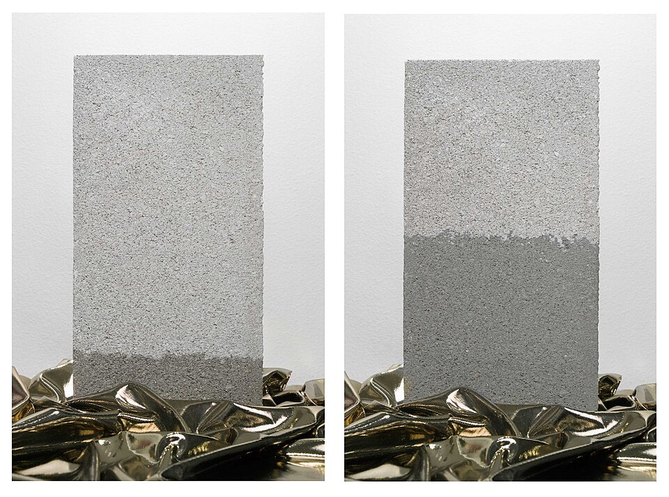

Adhesión contra cohesión: el agua que trepa por un tubo fino, el mercurio que se hunde y la savia de las secuoyas
Apoyá la punta de una servilleta de papel en un vaso de agua y mirá: el agua sube por el papel, contra la gravedad, varios centímetros por encima del nivel del vaso. Un técnico de laboratorio toca una gota de sangre con un tubito de vidrio muy fino y la sangre entra sola [1]. Ese fenómeno, el ascenso o el descenso de un líquido en un tubo angosto, se llama capilaridad.
La capilaridad es una competencia entre dos fuerzas. La cohesión es la atracción entre las moléculas del líquido; la adhesión, la atracción entre el líquido y la pared [1]. Su balance se mide con el ángulo de contacto θ, el ángulo entre la superficie del líquido y la pared: cuanto más fuerte es la cohesión frente a la adhesión, más grande es θ [1]. El ángulo de contacto se cuenta en detalle en el artículo sobre menisco y mojabilidad.
Según OpenStax, si θ es menor que 90°, el líquido sube por el tubo; si es mayor, baja [1]. El agua sobre vidrio limpio tiene un ángulo de contacto casi nulo y sube; el mercurio sobre vidrio, de 140°, baja y su superficie se curva hacia abajo, como una gota [1]. Esa superficie curva del líquido en el tubo es el menisco [1].
¿Hasta dónde sube? Hasta que el peso de la columna iguala la fuerza de la superficie que tira de ella a lo largo del borde del tubo. Bush muestra que se llega al mismo resultado por energía, por fuerzas o por presiones [2]. Es la ley de Jurin [1]:
OpenStax hace notar que la fórmula tiene sentido: la altura es proporcional a la tensión superficial, que es su causa; es inversamente proporcional al radio, porque un tubo más fino contiene menos líquido que sostener; y es inversamente proporcional a la densidad, porque un líquido más denso pesa más [1]. Con agua en un tubo de vidrio de 0,1 mm de radio, la columna sube unos 15 cm (un cálculo propio con los valores de OpenStax).
La soga que sube sola: imaginá la superficie del agua como una soga elástica atada al borde del tubo. La pared tira de los bordes hacia arriba, y la soga levanta la columna de agua que cuelga de ella. En un tubo ancho, la soga es larga pero tiene que levantar muchísima agua, y apenas la mueve. En un tubo finito, la soga es corta, pero el agua que hay que levantar es mucho menos: sube mucho más.
Según Bush, Leonardo da Vinci ya registró el ascenso capilar en sus notas, y propuso que los arroyos de montaña podían alimentarse por capilaridad a través de una red de grietas finas [2]. Giovanni Borelli mostró experimentalmente que la altura es inversamente proporcional al radio, Francis Hauksbee hizo una serie extensa de experimentos que Newton contó en su Óptica sin nombrarlo, y el fisiólogo inglés James Jurin confirmó de manera independiente la relación con el radio: de ahí el nombre de la ley [2].
OpenStax hace la cuenta para una secuoya de 100 metros. Para subir la savia hasta arriba solo por capilaridad, harían falta tubos de 1,41 × 10−7 m de radio. Pero los vasos del xilema tienen radios de hasta 2,5 × 10−5 m, unas 180 veces más grandes [1]. La conclusión es que la capilaridad sola no alcanza [1].
¿Cómo sube, entonces? Según OpenStax, la pregunta no está del todo resuelta, pero parece que la savia es tirada hacia arriba como una cadena que se mantiene unida por las fuerzas de cohesión: cada molécula que se evapora en una hoja tira de toda la columna un poquito hacia arriba [1]. Eso exige una presión negativa en el xilema [1], un tema que tendrá su propio artículo en esta sección de Mecánica de Fluidos.
Por qué se moja una esponja: Bush distingue entre que un líquido se extienda por una superficie plana y que se meta en un medio poroso. Para entrar en los poros basta una condición más fácil de cumplir que la de extenderse por completo; por eso la mayoría de los líquidos empapan esponjas y otros materiales porosos, mientras que extenderse del todo sobre una superficie es mucho menos común [2]. La servilleta de papel, una tela o el suelo funcionan como una red de tubos capilares.

La capilaridad es la tensión superficial puesta a trabajar contra la gravedad. En tubos finos, el agua sube y el mercurio baja, según cuánto se adhieren a la pared. La ley de Jurin dice que la altura crece cuanto más fino es el tubo, y eso explica por qué una servilleta se empapa sola. Pero tiene un límite: para levantar la savia de un árbol alto, la naturaleza necesita otro mecanismo.
Pregunta para la comunidad: Con la ley de Jurin, ¿qué radio tendría que tener un tubo para que el agua suba un metro? Si en vez de agua usaras alcohol, con un tercio de su tensión superficial y casi la misma densidad, ¿subiría más o menos?